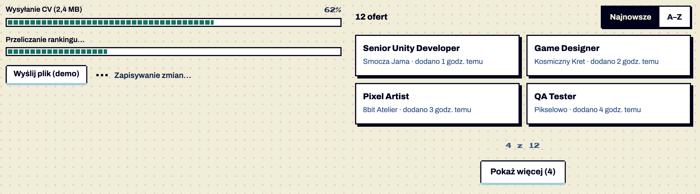
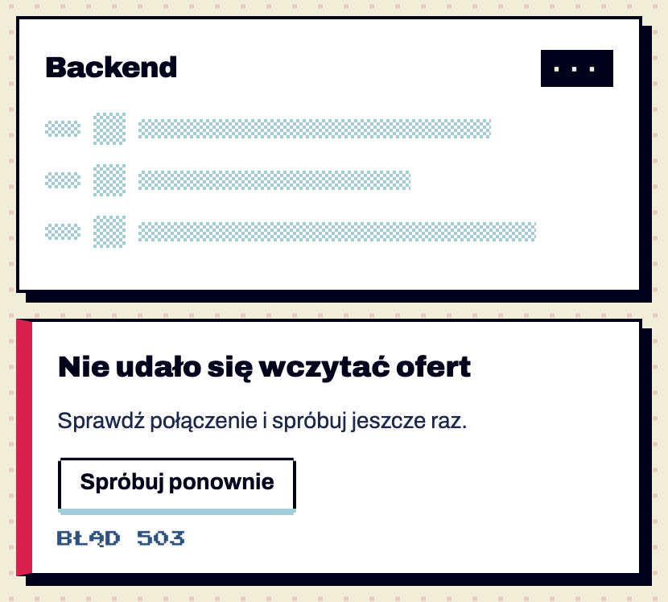

Senior Unity Developer
Smocza Jama · dodano 1 godz. temu
Wzorce / Ładowanie i postęp
testowy Szkielet, błąd wczytania, postęp, ładowanie w miejscu · od 1.6 — brakuje: użycie na 2 ekranach, test z czytnikiem
testowy Pokaż więcej · od 1.8 — brakuje: użycie na 2 ekranach, test z czytnikiem
Co pokazać, gdy trzeba czekać, i jak dokładać pozycje listy. Wybór zależy od czasu: do 1 s nic; 1–3 s szkielet (listy, tabele, karty) albo ładowanie w miejscu (jedna akcja); dłużej — pasek postępu; minuty — powiadomienie po zakończeniu. „Pokaż więcej” zamiast paginacji (K12), gdy się przegląda, a nie szuka konkretnej strony. Potwierdzone w dokumentacji S01 §6.13, §6.20.


| Część / rola | Wymagana / opcjonalna | Składnik / źródło | Co można zmienić / status |
|---|---|---|---|
| szkielet | warunkowy | .skel-row + .skel-n/.skel-av/.skel | dither 4 px Potwierdzone w dokumentacji |
| błąd wczytania | warunkowy | .load-error + „Spróbuj ponownie” | Potwierdzone w dokumentacji |
| pasek postępu | warunkowy | .progress + role=progressbar | Potwierdzone w dokumentacji |
| ładowanie w miejscu | warunkowe | .inline-loading → .is-done | Potwierdzone w dokumentacji |
| Pokaż więcej | opcjonalne | .load-more[data-more-for] + .load-more-info | Potwierdzone w dokumentacji |
| Oś | Wartość | Kiedy użyć | Co się zmienia | Ograniczenia / status / źródło |
|---|---|---|---|---|
| postęp | znany | > 3 s, wiadomo ile | pasek z procentem, segmenty 8 px | Potwierdzone w dokumentacji |
| postęp | nieznany | > 3 s | segment przesuwa się skokowo | Potwierdzone w dokumentacji |
| w miejscu | trwa / gotowe / błąd | zapisywanie | 3 piksele → zielony / czerwony kwadrat | Potwierdzone w dokumentacji |
| lista | porcje | przeglądanie | „Pokaż więcej (4)”, „8 z 12” | Potwierdzone w dokumentacji |
„Pokaż więcej” przenosi fokus na pierwszą dołożoną pozycję; filtr i sortowanie wracają do pierwszej porcji; licznik wyników liczy wszystkie pasujące Potwierdzone w dokumentacji. Przy „ogranicz ruch” animacje szkieletu i paska są wyłączone Potwierdzone w dokumentacji.
| Zalecane — przykład | Niewskazane — przykład | Powód / status / źródło |
|---|---|---|
| szkielet w wysokości treści | kręcące się kółko na środku pustej strony | układ nie skacze Potwierdzone w dokumentacji |
| „Pokaż więcej” w liście nowych ofert | paginacja 1–25 w przeglądaniu | Rekomendacja |
| pasek z procentem przy wysyłaniu pliku | nieskończona animacja bez informacji | Potwierdzone w dokumentacji |
| Zastosowanie | Token | Tryb / wariant | Wartość | Źródło | Status |
|---|---|---|---|---|---|
| wypełnienie paska | --action | #17735F | S02 | Potwierdzone w dokumentacji | |
| szkielet | --line-soft | #A3CCD9 / #2D5280 | S02 | Potwierdzone w dokumentacji | |
| błąd wczytania | --danger | krawędź 10 px | S02 | Potwierdzone w dokumentacji |
| Elementy / krawędzie | Wariant | Wartość / relacja | Token | Reguła / źródło / dokładność |
|---|---|---|---|---|
| pasek | — | 16 px z ramką i 2 px wnętrza | — | Potwierdzone w dokumentacji |
| szkielet | — | wiersze w docelowej wysokości | --row-h | Potwierdzone w dokumentacji nic nie skacze |
| Rola tekstu | Styl | Font / weight | Rozmiar | Interlinia | Tracking | Kolor / zachowanie / status |
|---|---|---|---|---|---|---|
| etykieta paska | — | Archivo 600 | 13 | — | — | Potwierdzone w dokumentacji |
| procent / „8 z 12” | pixel-xs | Press Start 2P | 10 | 1.6 | — | Potwierdzone w dokumentacji |
Ta sama sekcja co w examples/wzorce.html — działa na systemie 1.11.0. Przełącz motyw w nagłówku, żeby zobaczyć tryb ciemny.
Dobór wskaźnika zależy od czasu: do 1 s nic, 1–3 s szkielet listy albo ładowanie w miejscu, dłużej niż kilka sekund — pasek postępu z procentem, kilka minut — powiadomienie po zakończeniu. „Pokaż więcej” zamiast paginacji, gdy przeglądamy, a nie szukamy konkretnej strony.
Smocza Jama · dodano 1 godz. temu
Kosmiczny Kret · dodano 2 godz. temu
8bit Atelier · dodano 3 godz. temu
Pikselowo · dodano 4 godz. temu
Smocza Jama · dodano 5 godz. temu
Kosmiczny Kret · dodano 6 godz. temu
8bit Atelier · dodano 7 godz. temu
Pikselowo · dodano 8 godz. temu
Smocza Jama · dodano 9 godz. temu
Kosmiczny Kret · dodano 10 godz. temu
8bit Atelier · dodano 11 godz. temu
Pikselowo · dodano 12 godz. temu
<section class="ex" id="ladowanie" aria-labelledby="h-load">
<h2 id="h-load">Ładowanie, postęp i „Pokaż więcej”</h2>
<p>Dobór wskaźnika zależy od czasu: do 1 s nic, 1–3 s szkielet listy albo ładowanie w miejscu, dłużej niż kilka sekund — pasek postępu z procentem, kilka minut — powiadomienie po zakończeniu. „Pokaż więcej” zamiast paginacji, gdy przeglądamy, a nie szukamy konkretnej strony.</p>
<div class="two">
<div class="demo-stack">
<div class="progress" id="up-progress" style="--value:0%">
<div class="progress-label"><span id="up-l">Wysyłanie CV (2,4 MB)</span><span class="num">0%</span></div>
<div class="progress-track" role="progressbar" aria-labelledby="up-l" aria-valuemin="0" aria-valuemax="100" aria-valuenow="0"><div class="progress-fill"></div></div>
</div>
<div class="progress is-indeterminate">
<div class="progress-label"><span id="ind-l">Przeliczanie rankingu…</span></div>
<div class="progress-track" role="progressbar" aria-labelledby="ind-l" aria-valuemin="0" aria-valuemax="100"><div class="progress-fill"></div></div>
</div>
<div class="row" style="display:flex;flex-wrap:wrap;gap:16px;align-items:center">
<button class="btn btn-secondary btn-compact" type="button" id="up-start">Wyślij plik (demo)</button>
<span class="inline-loading" id="save-state" role="status">Zapisywanie zmian…</span>
</div>
</div>
<div>
<div class="section-title" style="margin-bottom:12px"><h3 style="margin:0;font:800 15px var(--font-sans)"><span data-count-for="nowe" data-count-forms="oferta|oferty|ofert">12 ofert</span></h3>
<div class="tabs" role="group" aria-label="Sortuj oferty" data-sort-for="nowe"><button type="button" aria-pressed="true" data-sort-key="order">Najnowsze</button><button type="button" aria-pressed="false" data-sort-key="name" data-sort-dir="asc">A–Z</button></div></div>
<div class="mini-cards" data-list="nowe" data-page-size="4"><article class="card" data-item data-sort-name="senior unity developer"><div><h3>Senior Unity Developer</h3><p>Smocza Jama · dodano 1 godz. temu</p></div></article><article class="card" data-item data-sort-name="game designer"><div><h3>Game Designer</h3><p>Kosmiczny Kret · dodano 2 godz. temu</p></div></article><article class="card" data-item data-sort-name="pixel artist"><div><h3>Pixel Artist</h3><p>8bit Atelier · dodano 3 godz. temu</p></div></article><article class="card" data-item data-sort-name="qa tester"><div><h3>QA Tester</h3><p>Pikselowo · dodano 4 godz. temu</p></div></article><article class="card" data-item data-sort-name="lead backend (go)"><div><h3>Lead Backend (Go)</h3><p>Smocza Jama · dodano 5 godz. temu</p></div></article><article class="card" data-item data-sort-name="technical artist"><div><h3>Technical Artist</h3><p>Kosmiczny Kret · dodano 6 godz. temu</p></div></article><article class="card" data-item data-sort-name="level designer"><div><h3>Level Designer</h3><p>8bit Atelier · dodano 7 godz. temu</p></div></article><article class="card" data-item data-sort-name="community manager"><div><h3>Community Manager</h3><p>Pikselowo · dodano 8 godz. temu</p></div></article><article class="card" data-item data-sort-name="producent gier"><div><h3>Producent gier</h3><p>Smocza Jama · dodano 9 godz. temu</p></div></article><article class="card" data-item data-sort-name="sound designer"><div><h3>Sound Designer</h3><p>Kosmiczny Kret · dodano 10 godz. temu</p></div></article><article class="card" data-item data-sort-name="ux researcher"><div><h3>UX Researcher</h3><p>8bit Atelier · dodano 11 godz. temu</p></div></article><article class="card" data-item data-sort-name="animator 2d"><div><h3>Animator 2D</h3><p>Pikselowo · dodano 12 godz. temu</p></div></article></div>
<div class="load-more" data-more-for="nowe"><p class="load-more-info"></p><button class="btn btn-secondary" type="button">Pokaż więcej</button></div>
</div>
</div>
</section>| Właściwość / atrybut | Typ | Wartości pokazane / opisane | Domyślna | Efekt i zastosowanie | Zależności / status / źródło |
|---|---|---|---|---|---|
| ppProgress(el, v) | funkcja | 0–100 / null | — | ustawia postęp / nieznany | Potwierdzone w dokumentacji |
| aria-valuenow | liczba | 62 | 0 | stan paska | Potwierdzone w dokumentacji |
| data-page-size | liczba | 4, 6, 12 | brak = wszystko | wielkość porcji | Potwierdzone w dokumentacji list-controls.js |
| Czas oczekiwania | Wskaźnik |
|---|---|
| < 1 s | nic (bez migania) |
| 1–3 s, lista / tabela / karty | szkielet .skel-row (§6.13) w docelowej wysokości |
| 1–3 s, jedna akcja | przycisk .is-loading (§6.1) albo .inline-loading „Zapisywanie…” → .is-done „Zapisano” (role="status") |
| > 3 s, znany postęp | .progress z procentem: role="progressbar" + aria-valuenow; ppProgress(el, 40) |
| > 3 s, nieznany | .progress.is-indeterminate z opisem, co się dzieje |
| minuty | pozwól pracować dalej, wynik jako ppToast |
| błąd | .load-error z „Spróbuj ponownie” (§6.13) lub .inline-loading.is-error |
Pokaż więcej zamiast paginacji, gdy użytkownik przegląda (nowe oferty, sklep): data-page-size="N" na liście + .load-more[data-more-for]; przycisk „Pokaż więcej (4)”, informacja „8 z 12”, fokus przechodzi na pierwszą dołożoną pozycję; filtr i sortowanie wracają do pierwszej porcji. Paginacja (§6.11) zostaje tam, gdzie wraca się do konkretnej strony (ranking, wyniki wyszukiwania).
Cel: WCAG 2.2 AA. Statyczne materiały i testy automatyczne w Chrome nie dowodzą zgodności — miejsca oznaczone „Do testu we wdrożeniu” wymagają testu z czytnikiem ekranu (design.md §0.6).
| Obszar | Ustalenie lub wymaganie | Dowód / status | Kryterium / wzorzec | Jak sprawdzić |
|---|---|---|---|---|
| pasek | role=progressbar + aria-valuenow + etykieta | Potwierdzone w dokumentacji | WCAG 4.1.2 | czytnik Do testu we wdrożeniu |
| ładowanie w miejscu | role=status | Potwierdzone w dokumentacji | WCAG 4.1.3 | czytnik Do testu we wdrożeniu |
| szkielet | aria-busy na kontenerze + „Wczytywanie…” sr-only | Potwierdzone w dokumentacji | WCAG 4.1.3 | czytnik Do testu we wdrożeniu |
| Pokaż więcej | fokus na nowej pozycji, ogłoszenie „Dodano kolejne pozycje” | Potwierdzone w dokumentacji | WCAG 2.4.3 | czytnik Do testu we wdrożeniu |
| ruch | animacje skokowe, wyłączane | Potwierdzone w dokumentacji | WCAG 2.3.3 (AAA), 2.2.2 | — |
S01 §6.13, §6.20; S03 list-controls.js, ui-controls.js; S20, S21.